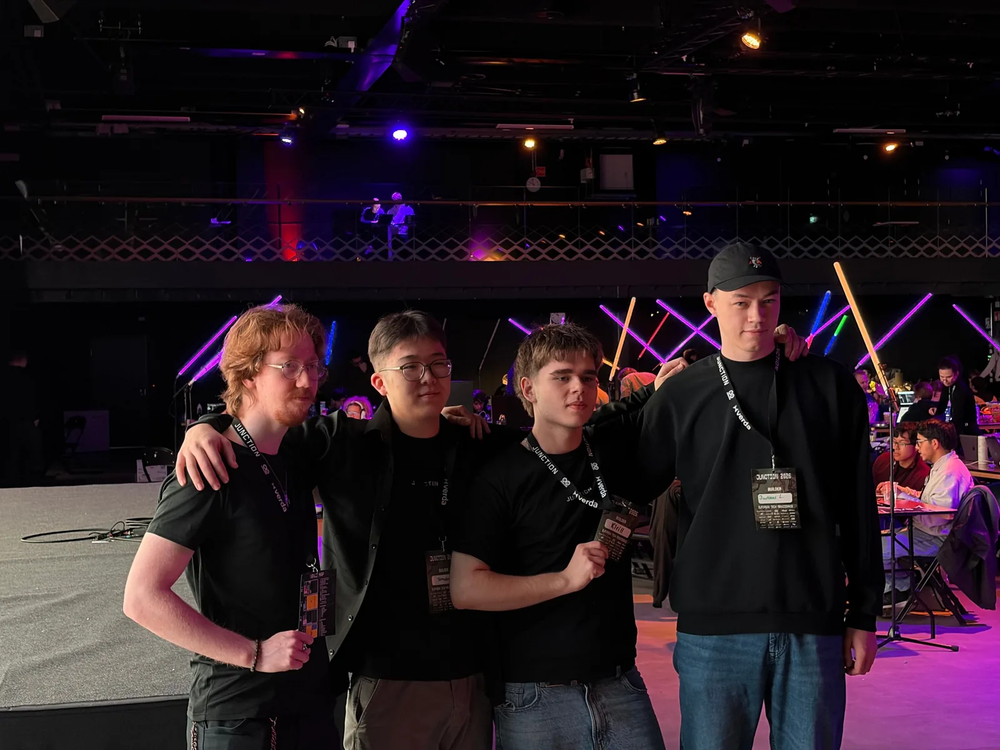

Open to internships, summer jobs & junior roles.
Paste a meme or post. See where it started, and whether its spread is real or coordinated.
Oxylabs challenge
Hostinger challenge
builders + AI agents, one weekend

My part.I built the coordination detector and the pipeline that pulls Bluesky posts into our database.
Hardest call.Friend groups and bots that say they're bots look coordinated too. I added guards for both, so real communities don't get flagged.
Proof it works.Tested against real Bluesky takedowns, not our own examples. Then made detection 3–4× faster with identical output.
Next time.[Kirill: one sentence, what you'd do differently]